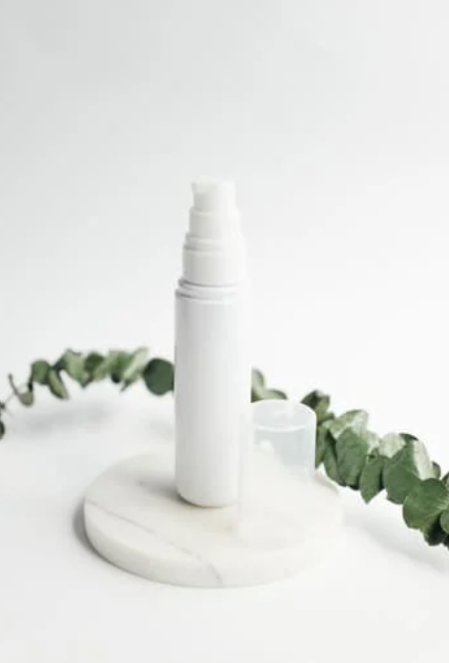

Our make-up remover cream is perfect for all kin types.
Our formula is fragrance-free, vegan and 99% natural. All superfluous eletments have been removed.
The two main components of this make-up remover are sweet almond oil and sunflower seed oil.
Sweet almond oil nourishes ans improves the elasticity of the skin.
Sunflower seed oil nourishes and facilitates the cleansing of the skin thanks to its richness in antioxidants.
How to use the make-up remover cream?
Apply the remover cream on a cotton pad or place a small amount in your hand and massage your face. Rinse your face afterwards.
Your skin will be soft, moisturized and cleansed.
Ingredients: Sweet Almond Oil, Sunflower Seed Oil, Caprylic / Capric Triglyceride, Polyglyceryl -4 Oleate, Isopropyl Isostearate, Vitamin E, Hybrid Sunflower Seed Oil.
Tested under dermatological control.
BUY 15$ 